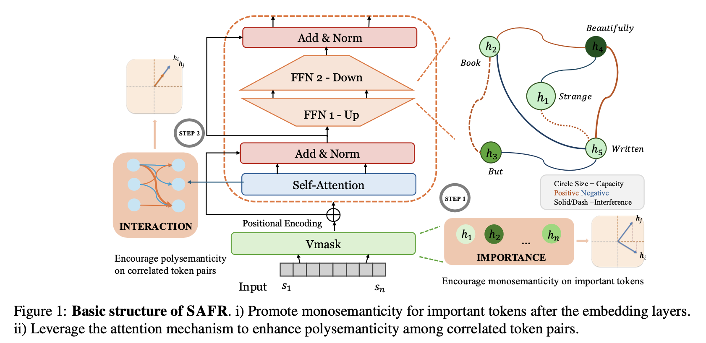

Ruidi Chang
Department of Computer Science
Address: Duncan Hall, 6100 Main St, Houston, TX 77005
Email: rc151@rice.edu
About Me
I am an incoming CS Ph.D. student in the Computer Science Department @ Rice University, advised by Prof. Hanjie Chen. My research interests lie in Interpretable Machine Learning, with a focus on the interpretability and understanding of language models. Prior to joining Rice, I was a master student at Carnegie Mellon University.
Research Experience
- Rice University, Houston, TX, Aug. 2024 - now
Department of Computer Science
- Ph.D. Student
- Advisor: Hanjie Chen
Selected Project
- SAFR: Neuron Redistribution for Interpretability R.Chang, C.Deng, H.Chen, NAACL 2025, In submission.
- This work enhances model interpretability by strategically reallocating neurons.

- This work enhances model interpretability by strategically reallocating neurons.
- Bridge mechanistic interpretation with post-hoc explanation and generative explanation
- This study provides a comparative analysis of three primary interpretive approaches.
Last update: 08/2024